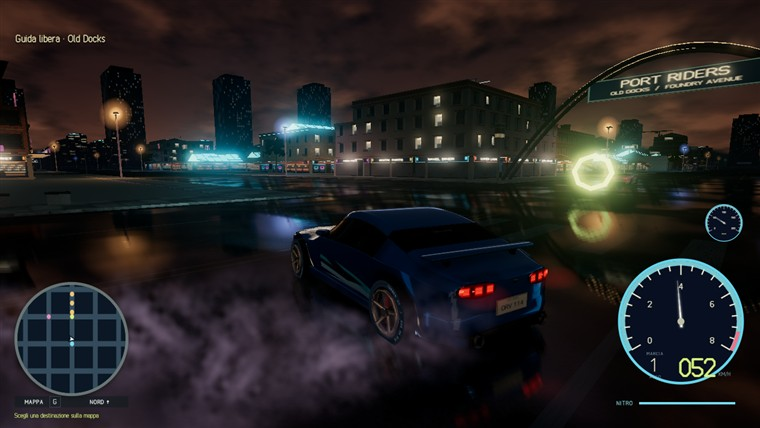
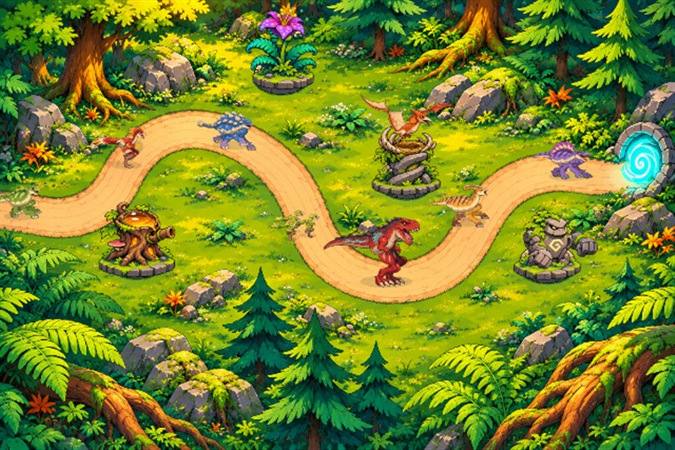

Corri per le strade di Port Riders, sfida i rivali e personalizza la tua auto in garage.

Difendi il portale dai dinosauri in cinque ambientazioni. Per giocare serve una finestra di almeno 1024 × 720 pixel.